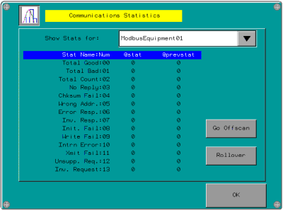

|
|
|
|
|
|
|
|
This feature displays information about communications between connected equipment and target machine. All target machines support communication statistics. For more information about communication statistics, see Section 5.3, Collecting Driver Statistics.
In the Diagnostics tab, touch Statistics to display the Communication Statistics screen.

Select the equipment whose statistics you want to display.
@stat: Current statistics
@prevstat: Previous statistics after a rollover.
For information about each statistic, see Section 5.3, Collecting Driver Statistics: Statistic Tables.
Touch Go Offscan to disable communication with the selected equipment. Touch Go Onscan to resume communication with the selected equipment.
Touch Rollover to move the current statistics (@stat) to the previous statistics (@prevstat), and reset the current statistics to zero.
For target machines with a smaller resolution (320x240), the statistics are divided into multiple lists. Touch the Next and Previous buttons to display one list then the other.
Touch Return to display the Vijeo-Designer Runtime Configuration Menu.
Touch the To Run Mode button to return to the user application.